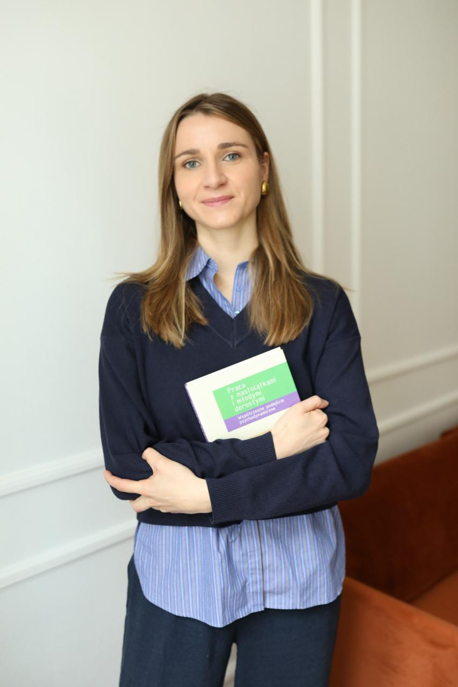

Gabinet psychoterapeutyczny w Wrocławiu. Terapia depresji, zaburzeń lękowych, zaburzeń osobowości i trudności w relacjach. Psychoterapia psychodynamiczna, TFP, CBT i EMDR. Sesje stacjonarnie i online.
Umów wizytęWybierz dogodny termin i umów się na wizytę online.
Wypełnij formularz, a potwierdzenie otrzymasz na email.

Jestem absolwentką Krakowskiej Szkoły Psychoterapii Psychodynamicznej i certyfikowaną psychoterapeutką pracującą w Wrocławiu. Specjalizuję się w terapii skoncentrowanej na przeniesieniu (TFP) oraz psychoterapii psychodynamicznej. Pomagam młodzieży i dorosłym zmagającym się z depresją, zaburzeniami osobowości typu borderline, lękiem uogólnionym, atakami paniki oraz trudnościami w relacjach.
Prowadzę terapię indywidualną, terapię par i terapię rodzinną w gabinecie w Wrocławiu oraz online. Moje podejście opiera się na budowaniu bezpiecznej relacji terapeutycznej, która pozwala zrozumieć siebie i swoje wzorce emocjonalne. Każdy człowiek ma w sobie zasoby do zmiany i potrzebuje odpowiedniego wsparcia, żeby z nich skorzystać.
Psychoterapia indywidualna dla dorosłych i młodzieży w nurcie psychodynamicznym. Pomagam w leczeniu depresji, zaburzeń lękowych, zaburzeń osobowości (w tym borderline), ataków paniki, niskiej samooceny oraz trudności w relacjach. Sesje stacjonarnie w Wrocławiu lub online.
Psychoterapia rodzinna dla rodzin przeżywających kryzysy, konflikty międzypokoleniowe i trudności w komunikacji. Pomagam odbudować zdrowe wzorce relacyjne, wzmocnić więzi i poprawić wzajemne zrozumienie między członkami rodziny.
Psychoterapia par dla osób zmagających się z kryzysami relacyjnymi, zdradą, problemami komunikacyjnymi i trudnościami emocjonalnymi. Wspólna praca nad odbudową bliskości, zaufania i satysfakcji ze związku.
Każdy plan psychoterapii jest dopasowany do potrzeb i celów klienta. Przed rozpoczęciem terapii przeprowadzam konsultację, która pozwala dobrać odpowiednie podejście.
Jestem psychoterapeutką z certyfikatem Krajowej Rady Psychoterapeutów i wieloletnim doświadczeniem klinicznym w leczeniu depresji, lęków i zaburzeń osobowości.
Gabinet psychoterapeutyczny w Wrocławiu zapewnia poufną i komfortową przestrzeń sprzyjającą otwartości. Oferuję też sesje online dla osób spoza Wrocławia.
Stosuję psychoterapię psychodynamiczną, TFP, CBT, DBT i EMDR. Dobór metody zależy od problemu i potrzeb klienta.
"Terapia u Faustyny całkowicie odmieniła moje życie. Wreszcie czuję, że rozumiem siebie i swoje emocje. Polecam z całego serca."
"Profesjonalne podejście i ciepła atmosfera. Czuję się bezpiecznie i rozumiana. Każda sesja to krok do przodu w mojej drodze do zdrowia."
"Dzięki terapii par udało nam się odbudować relację. Nauczyliśmy się komunikować i rozumieć swoje potrzeby. Jesteśmy wdzięczni za tę pomoc."
Pierwsza wizyta u psychoterapeuty to konsultacja trwająca około 50 minut. Podczas spotkania rozmawiamy o powodach zgłoszenia, Twoich oczekiwaniach wobec terapii i ustalamy wstępny plan pracy. To też czas na pytania i poznanie mojego stylu pracy. Konsultacja nie zobowiązuje do kontynuowania terapii.
Sesje psychoterapii odbywają się zwykle raz w tygodniu, o stałej porze. W przypadku terapii TFP (terapii skoncentrowanej na przeniesieniu) zalecane są dwa spotkania tygodniowo. Częstotliwość sesji ustalamy indywidualnie, w zależności od rodzaju problemu i Twoich potrzeb.
Czas trwania psychoterapii zależy od problemu i celów. Terapia krótkoterminowa trwa od kilku do kilkunastu spotkań. Psychoterapia psychodynamiczna i TFP to procesy dłuższe, od kilku miesięcy do kilku lat. Pierwsze pozytywne zmiany klienci zauważają zwykle po kilku tygodniach regularnych sesji.
Tak, oferuję psychoterapię online dla osób, które nie mogą dojechać do gabinetu w Wrocławiu. Sesje online odbywają się przez bezpieczną platformę wideo i są tak samo skuteczne jak spotkania stacjonarne. Psychoterapia online sprawdza się w terapii indywidualnej, terapii par i konsultacjach.
Cennik sesji psychoterapii omawiam podczas pierwszego kontaktu. Koszt zależy od rodzaju terapii (indywidualna, par, rodzinna) i długości sesji. Skontaktuj się ze mną telefonicznie lub przez formularz, aby uzyskać aktualne informacje o cenach.
Psycholog to osoba z dyplomem psychologii, która może prowadzić konsultacje i diagnozę. Psychoterapeuta to specjalista, który ukończył wieloletnie szkolenie z psychoterapii i pracuje pod superwizją. Psychoterapeuta prowadzi regularną terapię nastawioną na trwałą zmianę. W moim gabinecie w Wrocławiu pracuję jako certyfikowana psychoterapeutka.
Warto zgłosić się do psychoterapeuty, gdy odczuwasz przewlekły smutek lub obniżony nastrój, masz problemy z lękiem lub atakami paniki, przeżywasz trudności w relacjach, zmagasz się z niską samooceną lub myślami samobójczymi. Im wcześniej szukasz pomocy, tym szybciej możesz poczuć się lepiej.